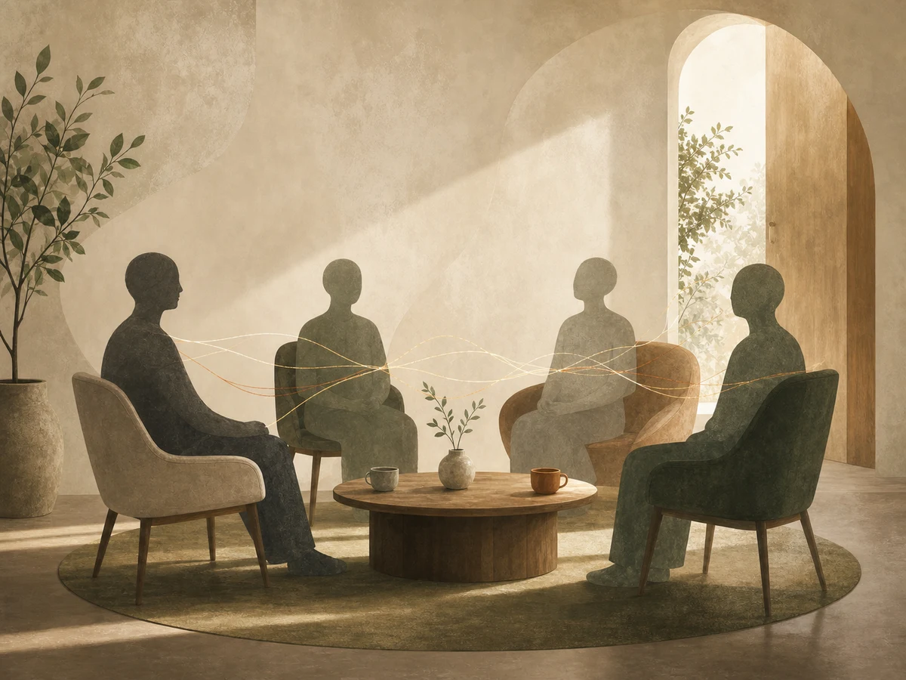

Чувството за самота носи преживяване, че човек не е обичан, че е странен, незаслужаващ вниманието и времето на другите. Да си самотен, често в чувствата се изравнява с непълноценен, виновен за самотата, защото със сигурност, мислим си, тя е следствие от недостатък или слабост.
Ето защо може да е трудно човек да признае, че е самотен, дори и пред себе си, и вместо това да продължи упорито в отговор на „как си?“ да отвръща „добре“, задълбочавайки състоянието си, защото не допуска друг да разбере какво наистина се случва. Преживяването за самота не е въпрос на малоценност, а на връзката — както със себе си, така и с другите.
Възможно е да се чувстваме самотни сред голямото парти, пълно с хора, което сами сме организирали, както и да живеем в усамотение, но да не сме самотни. Обичайно изпитваме страх да останем сами и компенсираме това като поддържаме отношения — романтични или приятелски — които не удовлетворят емоционалните ни нужди, но си казваме „поне не съм сам(а)“, докато заедно с това живеем във все по-задълбочаваща се неудовлетвореност и непълноценни отношения.
Или пък живеем изолирани и различни страхове ни спират, за да опитаме да намерим своята среда и баланс между социален живот и време със себе си. Потребността от принадлежност е основополагаща, тя е на трето място в пирамидата на Маслоу, след основните потребности като храна и подслон.
Преживяването за самота е свързано със здравословни усложнения
Преживяването за самота може да повлияе на психичното и физическото здраве на човек.
Някои усложнения на психичното здраве включват:
- депресия;
- тревожност;
- влошаване на паметта и когнитивните функции;
- влошаване на самочувствието и чувството за собствена стойност;
- развиване на поведения, които увеличават стреса и задълбочават преживяването за липса на принадлежност.
Такива поведения могат да бъдат продължително скролване в социалните медии; пристрастяващо поведение като прекомерно пазаруване онлайн, злоупотреба с храна, алкохол или наркотични вещества; повече време в гледане на предавания вместо общуване и липса на движение и активност; повече самоунизителни изказвания, например „всички ме мразят“, които дистанцират другите и усилват чувството за отхвърляне.
Някои усложнения на физическото здраве включват:
- влошено качество на съня;
- чувство за отпадналост и умора;
- заболявания, свързани с прекомерно преживяване на стрес, например различни кожни заболявания, разстройства на стомашно-чревния тракт, наднормено тегло, диабет и др.
Защо не мога да създам приятелства — възможни обяснения
Тревога. Много хора изпитват тревога при среща с непознати, но без да могат да определят какво я провокира. Тя е просто чувство на притеснение, неудобство, дискомфорт, който свива стомахът, снижава гласа или държи на разстояние от скупчената група хора ей там. В такова състояние е много трудно да се свържем с другите, да изразяваме себе си и да участваме в разговор.
Високи очаквания към себе си. Ако човек очаква от себе си винаги да бъде център на случващото се, да забавлява останалите, да бъде популярен, супер интересен или непрекъснато в помощ и на разположение, много възможно е да изпитва трудност да създаде приятелства, които да носят емоционално удовлетворение, чувство за близост, споделеност и принадлежност. Вместо това може да се обгражда с дълъг списък от хора, с които общува, но без близост, съдържание и смисъл.
Избягване. Когато пред вас се разкрие възможност за нещо, което не сте правили досега, вие винаги отказвате — не сте сигурни как да се държите, дали ще се справите, дали ще ви хареса и може би куп други аргументи. Всеки има страхове, с които предпочита да се съобрази, вместо да предизвика себе си, изправяйки се срещу тях и преживявайки неудобство.
Но когато страховете доминират живота ви и водят до избягващо поведение, може би е важно да се срещнете с тях. Дали в основата на избягващото поведение не се крие страх от отхвърляне или чувство за малоценност?

Идеи как да създадете приятелства
Потърсете приятна обстановка. Опитайте да намерите пространство и начин, така че да се чувствате удобно и спокойно докато се запознавате с нов приятел. За да постигнете това е необходимо да мислите критично и да поставите своите нужди и желания в приоритет.
Помислете за нуждите си. Какво ви липсва в общуването, което имате непосредствено в живота си; какво търсите в едно ново запознанство; кои са интересите, които сте забравили и ви липсват или пък онези неща, които все си представяте, но никога не тръгвате към тях? Когато откриете своите отговори, помислете какво можете да направите, за да срещнете нови хора в синхрон на онова, от което се нуждаете.
Помислете за вашите специални качества. Понякога забравяме за всички наши специални качества, които ни правят различни от всеки друг и с които можем да допринесем в общуването си. Успяваме да се свържем с тях само, ако някой каже например: „толкова любопитни неща разказваш“ или „имаш много готино чувство за хумор“ — това е вътре в нас, дори когато дълго време не се е случвало да го чуем от друг.
Дайте си време. Според изследване на Университета в Канзас, проведено през 2018 година, на една връзка са необходими около 50 часа заедно, в общи дейности, за да се превърне от „просто познати“ в „случайни приятели“; за да определят себе си като „приятели“ на хората са необходими 90 часа; и повече от 200 часа, за да наричат връзката си с някого „близки приятели“.
Първоначалното чувство на удоволствие и приятна компания с някого не е достатъчно за създаване на приятелство, приятелствата изискват време, внимание и грижа. Според същото изследване хората се сближават най-много, когато прекарват време във взаимно приятни дейности. „Приятелите от работа“ са важна част от социалния кръг на човек, но този контекст е по-малко благоприятен за изграждане на пълноценни приятелства, тъй като не винаги е възможно да се съвместят приятните дейности заедно и изискванията в работна среда, спрямо йерархията, ролите и отговорностите.
Как да получите помощ
Ако не можете да откриете чувството си за принадлежност в общуването с другите, бихте могли да се свържете с психотерапевт, който да ви помогне да разберете своите индивидуални трудности и да работи с вас, така че да откриете начините си за справяне.
Понякога е трудно да рефлектираме сами върху уязвимите си преживявания и сами да намерим как да ги преодолеем. Възможността да почувстваме, че сме чути, приети и разбрани от друг човек, който да мисли заедно с нас за онова, което преживяваме, е липсващата част, която би ни помогнала да се справим със страданието си.
Източници
- Verywell Mind — Why Can't I Make Friends?
- PsychCentral — How to Admit When You're Lonely.